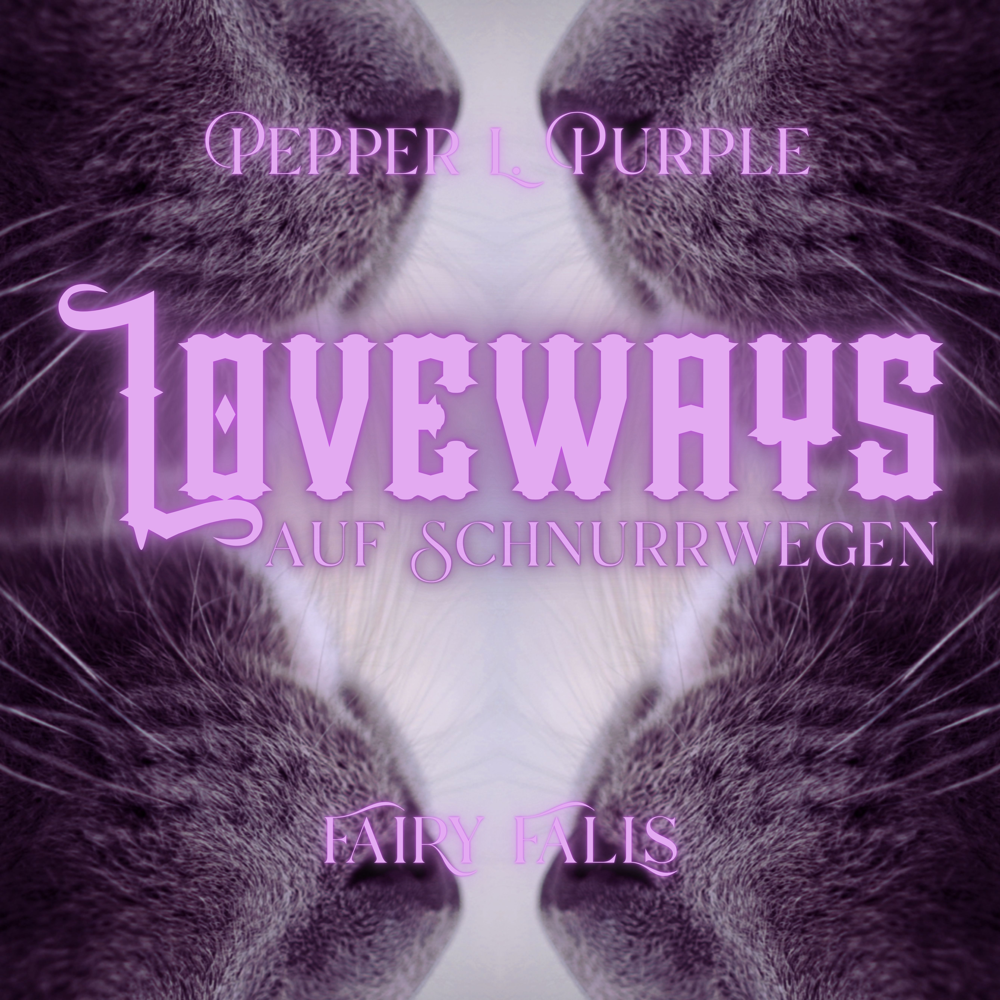
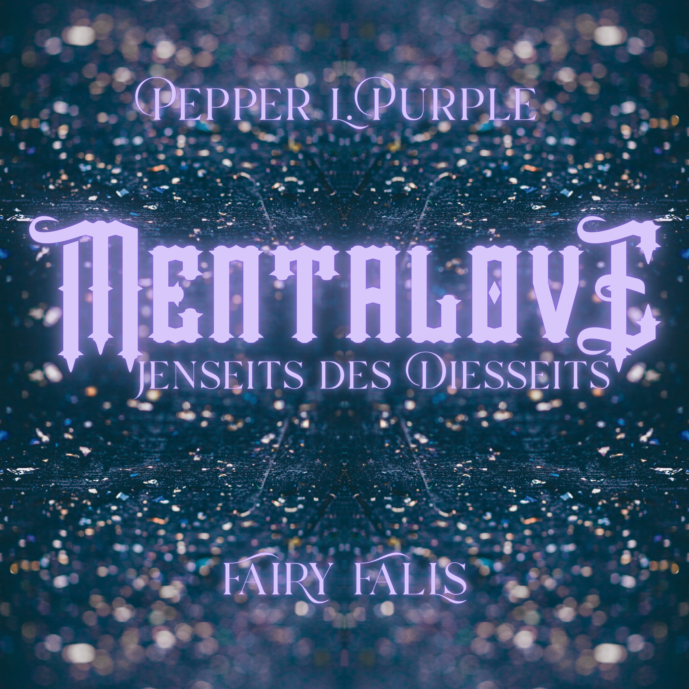
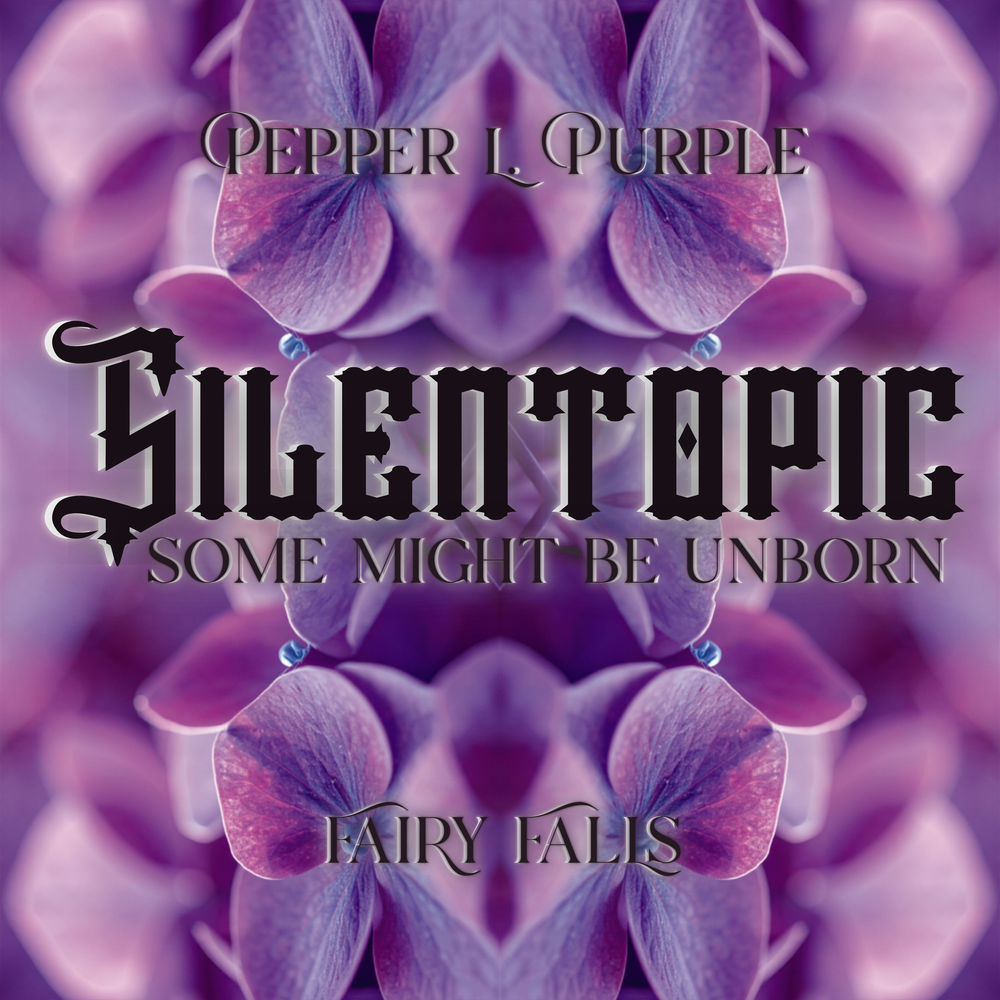
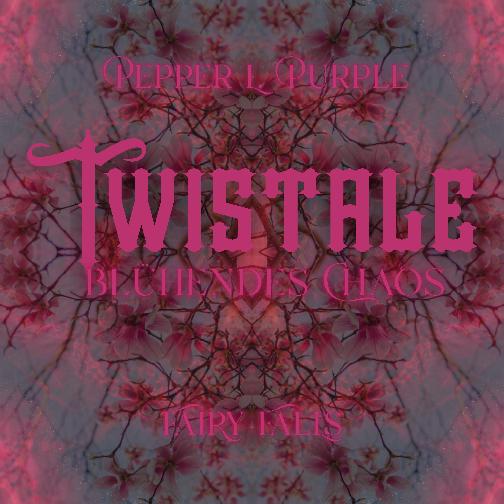
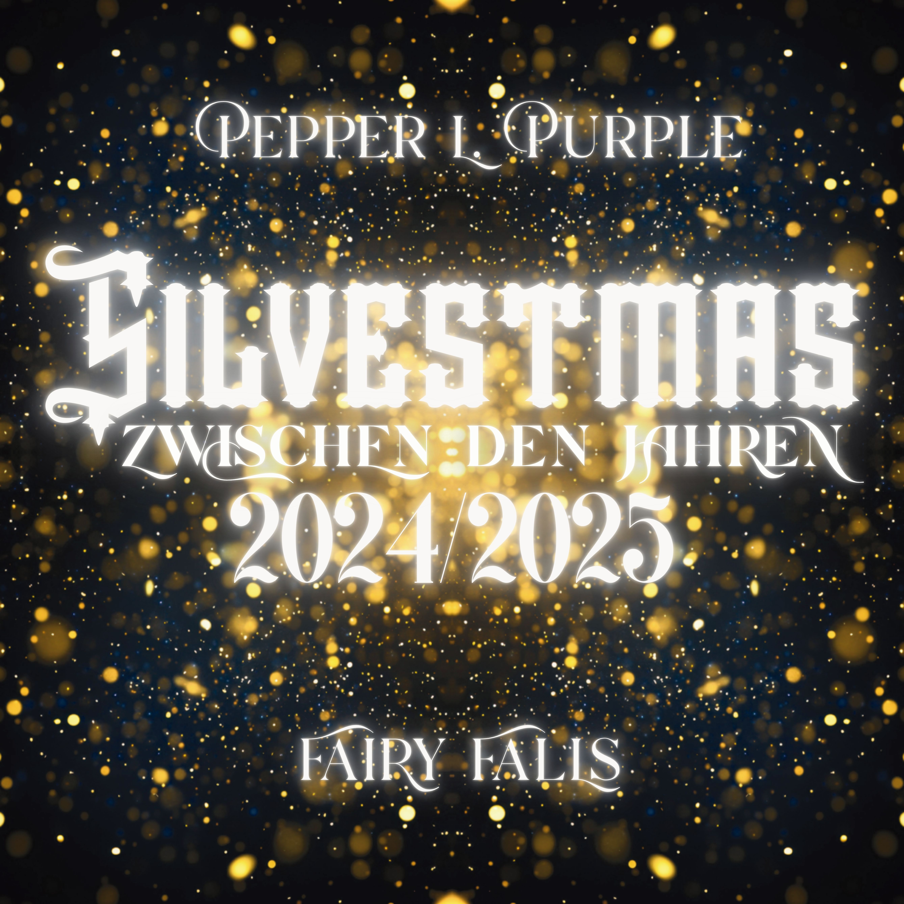

Hier findest du abwechslungsreiche Romantasy Hörerlebnisse von kuschlig bis düster. Jede Geschichte steht für sich allein und doch sind sie alle miteinander verbunden.
Ich biete sie dir kostenlos und werbefrei an. Sollte das ein schlechtes Gewissen bei dir auslösen, honoriere meine Arbeit, indem du sie über die sozialen Medien rezensierst. Falls du noch mehr unterstützen möchtest, wirf gern was in meinen Klingelbeutel.
Aber zuallererst genieße deinen Aufenthalt in Fairy Falls!
Pepper L. Purple

flauschig, inklusive Schnurren, aber ganz ohne Spice – dafür mit doppelter Überraschungs-Garantie!
Meine persönliche Empfehlung für den Einstieg – auch wenn die Geschichte, so ganz ohne Spice, etwas aus der Reihe tanzt.

Dunkelsüß mit mehr Spice als du erwartest

blutige Realität trifft auf fantastische Akademie (Erwachsenenbildung)

düsteres Märchen mit Spice und einer Menge Wahnsinn

unterhaltsamer Spice für zwischen den Jahren